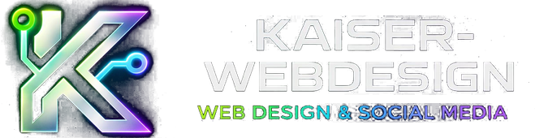
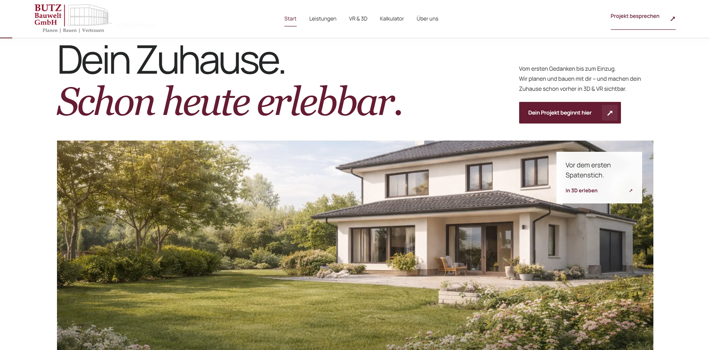

Scroll steuert die Szene.
Der Scrollweg wird zur Timeline. Inhalte reagieren kontrolliert auf die Bewegung statt einfach nur einzublenden.

WEBDESIGN AUS DINKELSBÜHL
Ich gestalte und entwickle deine Website – mit klaren Inhalten, individuellem Design und einem direkten Weg zur Anfrage. Für Selbstständige und Unternehmen.
Dein Unternehmen hat eine eigene Geschichte, eigene Stärken und einen eigenen Anspruch. Genau das soll man online erkennen.
Ich übersetze das in eine Website, die sich nach dir anfühlt, dein Angebot verständlich macht und Besucher gezielt zur Anfrage führt.
Was ich für dich entwickleAusgewählte Kundenprojekte aus unterschiedlichen Branchen.
Entdecke, wie daraus ein eigenständiger Auftritt wird.
SPEDITION & LOGISTIK
Ein klarer, kraftvoller Auftritt für Transport, Fuhrpark und direkte Anfragen.
Ein markanter Auftritt für Peter Kopp aus Mönchsroth. Kräftige Typografie, echte Einblicke ins Dachhandwerk und direkte Wege zu Leistungen und Kontakt.
Strategie, Gestaltung und Entwicklung gehören zusammen. Damit aus einzelnen Entscheidungen ein stimmiges Ganzes wird.
Über dein Projekt sprechenEine Website, die dein Unternehmen erkennbar macht. Mit durchdachter Struktur, individuellem Design und einer Umsetzung, die sich auf dem Smartphone genauso gut anfühlt wie am großen Bildschirm.
Dein Unternehmen hat sich weiterentwickelt. Dein Auftritt sollte mitziehen. Wir prüfen, was erhalten bleibt, schärfen die Botschaft und gestalten den Weg durch deine Inhalte neu.
Die gleiche Handschrift, auch jenseits deiner Website. Reels, Beiträge und visuelle Inhalte bringen deine Marke in Bewegung und passen zu den Menschen, die du erreichen möchtest.
Neue Leistungen, neue Bilder oder ein nächster Entwicklungsschritt: Auf Wunsch begleite ich deinen Auftritt auch nach der Veröffentlichung. Den Umfang stimmen wir passend zu deinem Bedarf ab.

DETAIL / BUTZ-BAUWELTWAS DEN UNTERSCHIED MACHT
Der richtige Abstand. Ein klarer Satz. Ein Kontaktweg, der sofort auffällt. Viele kleine Entscheidungen bestimmen, wie hochwertig sich eine Website anfühlt — und wie leicht sie zu benutzen ist.
MOTION SHOWCASE / AURELIA YACHTS
Bei Aurelia Yachts ist Scrollen nicht nur Navigation. Die Bewegung steuert Bild, Perspektive und Rhythmus — und macht aus einer Produktseite eine geführte digitale Inszenierung.
Der Scrollweg wird zur Timeline. Inhalte reagieren kontrolliert auf die Bewegung statt einfach nur einzublenden.
Zoom, Perspektive und Übergänge setzen die wichtigen Momente in Szene und halten den Nutzer im Flow.
Animation hat eine Aufgabe: Das Produkt verständlicher, hochwertiger und erinnerbarer zu präsentieren.
Vier Schritte. Direkter Austausch.
Ein Ergebnis, das zu dir passt.
Wir sprechen über dein Unternehmen, deine Kunden und das Ziel deiner Website. Vorhandene Inhalte und offene Fragen kommen auf den Tisch.
Ergebnis: ein gemeinsames BriefingIch entwickle Struktur und Gestaltung. Du siehst früh, wohin es geht, und gibst Feedback, bevor die Umsetzung ins Detail geht.
Ergebnis: abgestimmtes KonzeptDesign, Inhalte und Funktionen werden zur Website. Wir verfeinern die Ansichten und prüfen Lesbarkeit, Bedienung und Kontaktwege.
Ergebnis: deine fertige WebsiteNach deiner Freigabe veröffentlichen wir den Auftritt. Du bekommst eine Übergabe; weitere Pflege vereinbaren wir bei Bedarf.
Ergebnis: bereit für deine Kunden05 / GUT ZU WISSEN
Was du vor dem ersten Gespräch
wissen solltest.
Du sprichst direkt mit mir und bekommst klare Antworten ohne Umwege.
So wird schon vor dem Start transparent, was auf dich zukommt und was ich dir abnehme.
Für Selbstständige und Unternehmen, die Wert auf einen eigenständigen Auftritt und persönliche Zusammenarbeit legen. Besonders gerne arbeite ich mit Handwerk, Dienstleistern und lokalen Unternehmen. Projekte können wir auch deutschlandweit gemeinsam umsetzen.
Ein einfacher Onepager startet ab 349 €, Business mit bis zu fünf Seiten ab 879 € und Premium mit einer cineastischen Scroll-Sequenz ab 1.449 €. Zusätzliche Seiten und Funktionen kannst du im Website-Konfigurator zusammenstellen. Du siehst dort eine unverbindliche Preisorientierung; das verbindliche Angebot stimmen wir persönlich ab.
Der Zeitplan richtet sich nach dem Umfang, den vorhandenen Inhalten und unseren Abstimmungen. Im Briefing klären wir deinen Wunschtermin und legen realistische Meilensteine fest.
Nein. Wir sichten gemeinsam, was vorhanden ist und was noch fehlt. Unterstützung bei Texten, Struktur und der Bildauswahl planen wir bei Bedarf ein. Zusätzliche Leistungen stimmen wir vorab ab.
In vielen Fällen ja. Bei einem Relaunch prüfe ich deine bestehende Umgebung. Domain, E-Mail und vorhandene Inhalte berücksichtigen wir in der Planung, bevor Änderungen vorgenommen werden.
Wenn du regelmäßig Inhalte pflegen möchtest, planen wir ein passendes Redaktionssystem ein. Alternativ übernehme ich Änderungen nach Vereinbarung. Wir wählen die Lösung danach, wie du tatsächlich arbeiten möchtest.
Eine saubere Seitenstruktur, passende Metadaten, mobile Darstellung und technische Grundlagen gehören zur Umsetzung. Weitergehende Suchmaschinenoptimierung stimmen wir nach Bedarf ab. Eine bestimmte Platzierung bei Google lässt sich nicht versprechen.
KAISER WEBSITE STUDIO
Wähle dein Paket. Gib deinem Auftritt Charakter. Ergänze, was dein Unternehmen braucht – und sieh dabei zu, wie deine Website entsteht.
Alle Angaben dienen der Preisorientierung. Hosting, Domain, externe Dienste und Lizenzen sind nicht enthalten. Die endgültige steuerliche Ausweisung erfolgt im persönlichen Angebot. Texte und Bildmaterial werden bereitgestellt, sofern nicht zusätzlich gewählt.
Erzähl mir von deinem Unternehmen und deinem Ziel. Ich melde mich persönlich mit einer ersten Einschätzung und den nächsten Schritten.
info@kaiser-webdesign.de Ivan Kaiser · Dinkelsbühl
ÜBER DIE WEBSITE HINAUS
Ein Auftritt.
Viele Berührungspunkte.
Deine Website und dein Content erzählen dieselbe Geschichte. Vom ersten Reel bis zur konkreten Anfrage.
↗Mehr auf Instagram